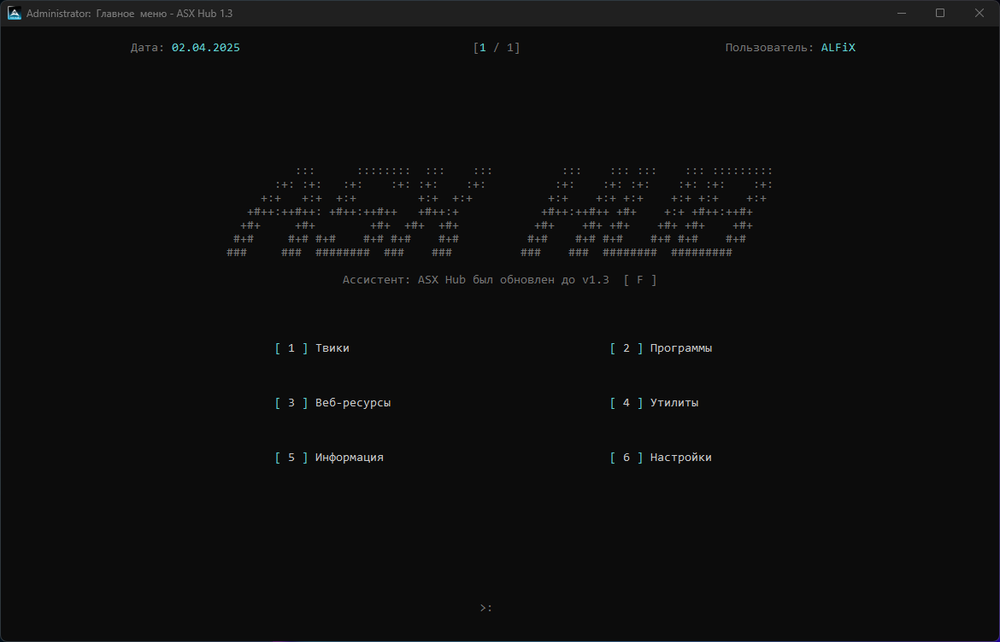

ASX Hub
Мощный инструмент для оптимизации Windows с минималистичным интерфейсом
📥 Скачать
Возможности
🚀 Оптимизация производительности
🧰 Тонкая настройка системы
🧼 Очистка мусора и временных файлов
🔐 Улучшение приватности и безопасности
Интерфейс
